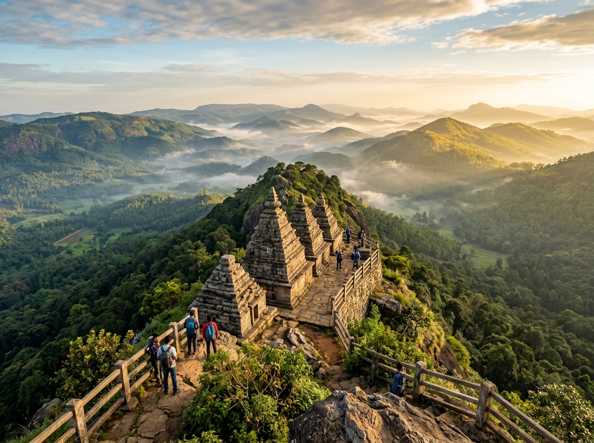
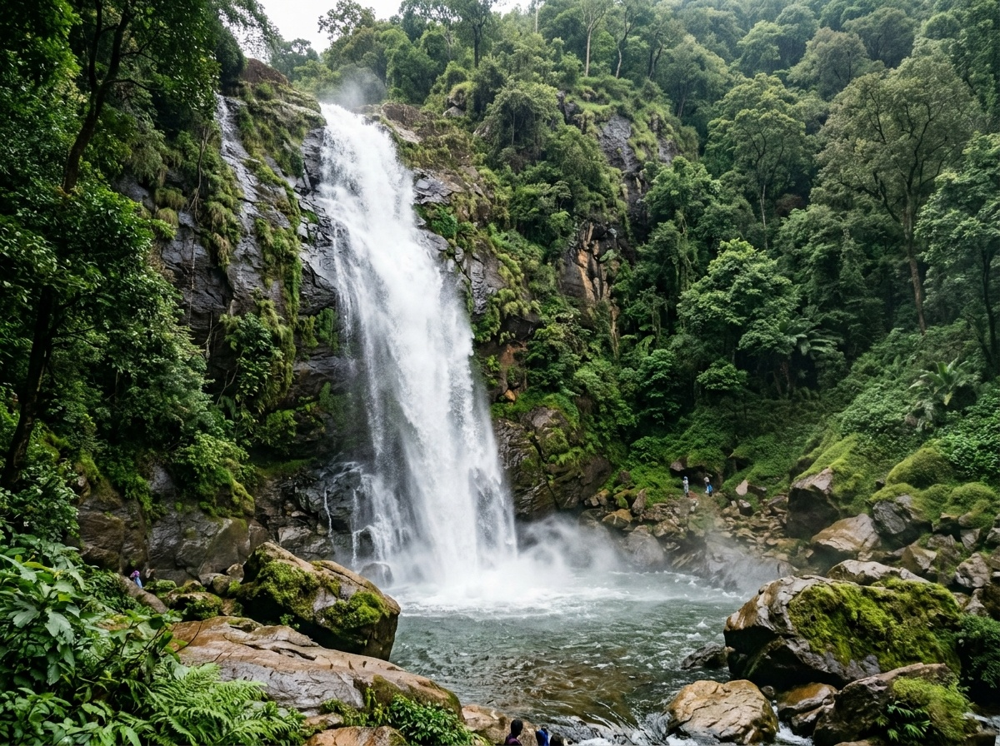
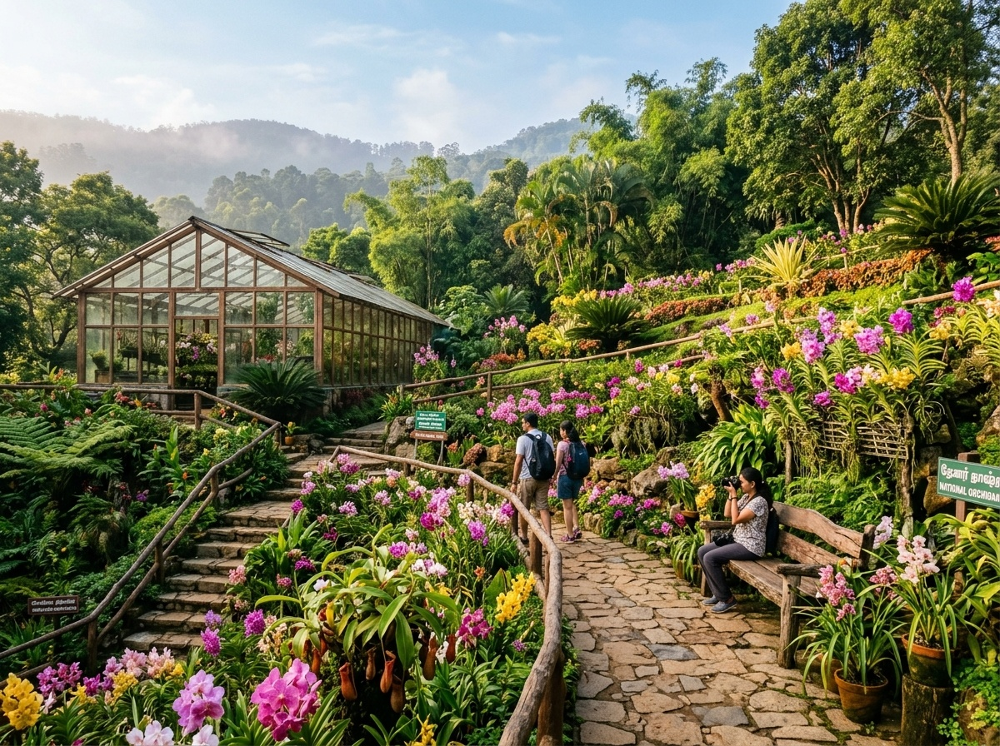
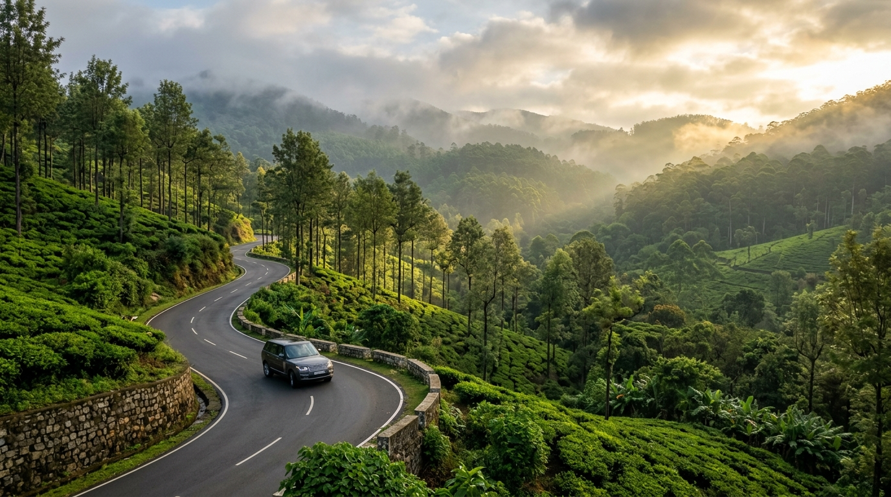

Lakes & Leisure
Lakes & Leisure
Yercaud Lake (Emerald Lake)
The centerpiece of Yercaud, featuring scenic pedal and row boating surrounded by lush green gardens and misty hill ridges.
 Viewpoint
Viewpoint
Lady's Seat Viewpoint
A dramatic rock cliff viewpoint offering panoramic vistas of the winding 20 hairpin bends and glittering Salem city below.

Viewpoint & HeritagePagoda Point (Pyramid Point)
Ancient stone pyramidal structures sitting on eastern hill slopes with refreshing cool mountain breezes and endless valley views.
 Scenic Drive
Scenic Drive
32-Km Loop Road
A tranquil driving loop through heritage coffee estates, towering bamboo canopies, and cardamom plantations.

WaterfallsKiliyur Falls
A 300-foot waterfall cascading into the tranquil Servaroyan valley pool, surrounded by dense jungle flora.

Botanical FloraNational Orchidarium & Botanical Garden
Home to endangered orchid species, the insect-eating pitcher plant, colorful rose beds, and century-old manicured trees.

Nature & ExplorationBear's Cave & Montfort Viewpoint
Historic cave nestled in private coffee estates, accompanied by peaceful views around the prestigious colonial Montfort campus.
Viewpoint
Gent's Seat & Rose Garden
Adjacent cliff viewpoints next to Lady's Seat overlooking Salem plains with a neighboring curated hillside rose nursery.
Shevaroy Temple (Highest Point)
Perched at 5,326 feet above sea level, this cave temple dedicated to Lord Shevaroyan provides panoramic vistas of the Eastern Ghats.
* Note: Sightseeing spots are planned in the most efficient sequence by driver M. Ezhilmathi, and can be customized according to your family's pace and weather conditions.